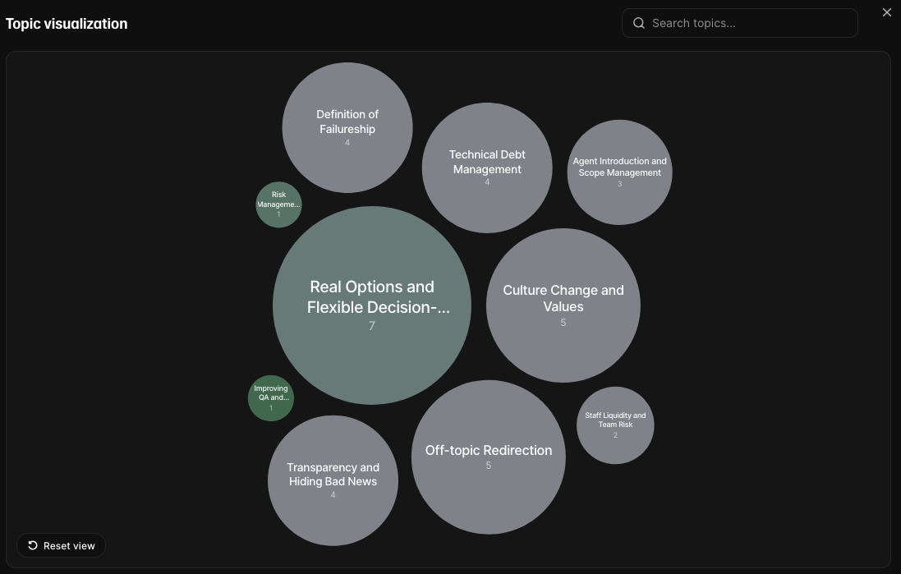
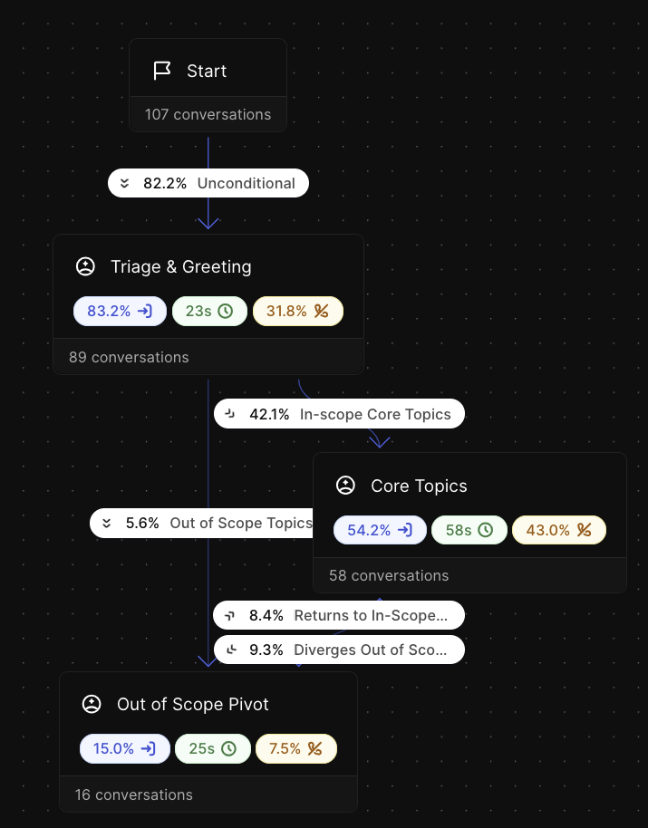

Click or press any key to
play
LAGE RAHO MUNNA BHAI
Munna read everything Gandhi wrote. Then Bapu started talking back.
BUILDATHON · The Parallel Mind
Virtual Chris Matts
A voice agent you can talk to, built from everything Chris has written.
Munish Malik · Sudeep Giri · Aditya Goyal
WHY CHRIS
The Story
Chris Matts is an agile expert in software delivery, business analysis, organisational culture and risk management. He co-authored Commitment, the graphic novel that popularized Real Options, created Given/When/Then with Dan North, and developed Feature Injection to help the business build the examples that feed BDD.
His advice has worked for me
I've worked with him. When I'm stuck, his is the view I want.
Manner in which he communicates
His examples, his words. It feels like talking to him, not reading a summary.
Domain expertise
Real options.
Failureship.
Risk-managed vs risk-averse cultures.
THE PROBLEM
Chris has written a lot, but he can't be everywhere
257
blog posts
~40
recorded talks
2
books
1
Chris, who's busy
We can read, we can search, but we can't really ask a question.
LIVE DEMO
Let's ask him.
01
Risk-managed vs risk-averse cultures
02
Failureship
03
Real options, in plain words
WHAT WE BUILT
A voice agent that knows everything Chris has written.
THE CONVERSATION
01 Voice as the medium
The best way to bounce off ideas, or have a quick chat
02 Knowledge base
Searches his posts, talks and books.
RESPONSIBLE AI
References
Each answer points to the post, talk or book it came from.
Guardrails
The platform's safety guardrails are on. Our custom topic one is off for now.
Tested
Eight simulated conversations, each scored by an LLM judge.
Evals
✓ Answered the question?
✓ Stayed on topic?
✓ Any made-up specifics?
Built on ElevenLabs Agents · Simulated voice · With Chris' consent
WHAT WE LEARNED
Ideas to scale
Fully custom pipeline
We pivoted to building over ElevenLabs in order to prototype fast. The same moving parts form the basis for the pipeline in case of a bespoke solution.
Better guardrail using Decision models
We attempted to wire Elevenlabs with Jev. We quickly found out that the classifier that's meant to check every turn only ran on some.
The backbone is an LLM
Under the hood, we're currently using a small LLM, to keep things economical; but if we're scaling, SOTA/bigger = better*
Munish Malik · Sudeep Giri · Aditya Goyal
NOW IMAGINE
How this is relevant to Equal Experts
Thomas's strategy
Ask why the strategy says what it says, without Thomas in the room.
Ryan's thinking
A leader's knowledge, available to the whole organisation, all the time.
A product manager's strategy to talk to
Her teams ask why something was prioritised, and hear her reasoning.
Thank you. Questions?
BUILDING TRUST
Conversation Analytics

